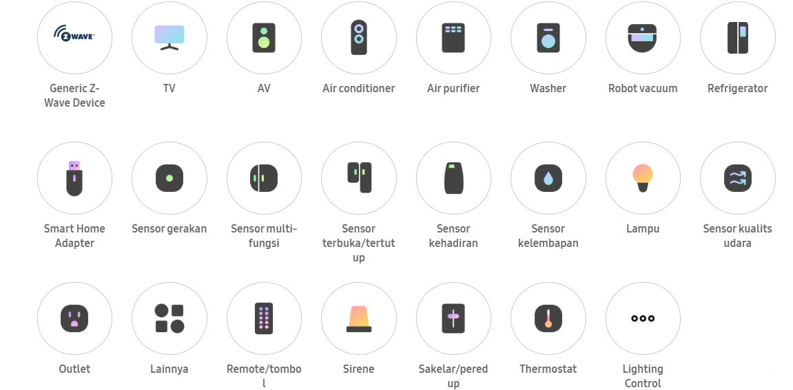

Lebih banyak perangkat cerdas dengan satu aplikasi cerdas
SMARTTHINGS
sebuah perusahaan teknologi, yang diakuisisi Samsung pada tahun 2014 dan kemudian diberi nama Samsung SmartThings. SmartThings cloud kami merupakan platform terbuka yang bisa kompatibel dengan perangkat seluler, perabotan rumah, TV, dan sensor Anda untuk sebuah pengalaman yang seamless. Fondasi dari ekosistem terhubung ini adalah cloud terunifikasi yang kuat yang bisa diakses melalui satu aplikasi SmartThings.
KEGUNAAN
Kegunaan :
Samsung SmartThings merupakan teknologi yang dapat mengintegrasikann gadget dengan peralatan rumah tangga maupun komputer sehingga mudah diakses dimanapun dan kapanpun. Dengan hal ini penggunanya tidak perlu takut ketika lupa mengunci pintu, atau terjadi kebakaran.
PRODUK-PRODUK UTAMA
Hub SmartThings
Aplikasi SmartThings
Berbagai sensor dan perangkat cerdas
SPESIFIKASI
Setiap perangkat harus tersambung ke Wi-Fi atau jaringan nirkabel lainnya.
Untuk terhubung, smartphone harus menggunakan SmartThing App yang dapat diinstal melalui app store.
Perangkat harus produk dari Samsung.
Untuk kemampuan lintas operasi melalui SmartThings, semua perangkat harus didaftarkan dengan satu Samsung Account.
Perangkat harus memiliki logo 'Works with SmartThings' pada produk atau paket produk.
Perangkat yang kompatibel harus dibeli secara terpisah untuk mengakses Layanan SmartThings.
PERANGKAT PENDUKUNG

FITUR
Dalam aplikasi mobile SmartThings, penggunanya dapat mengatur peralatan rumah tangga mulai dari mengunci pintu, menyalakan lampu, memantau kesehatan, memantau aktivitas yang sedang terjadi, mengatur serta memantau suhu, memantau kelembaban, hingga mengaktifkan atau mematikan listrik. Selain itu, dalam aplikasi ini penggunanya akan mendapatkan notifikasi apabila sedang terjadi keadaan darurat seperti kebakaran, atau suhu yang naik drastis. Tentunya dengan adanya perangkat ini dapat memudahkan penggunanya dalam melakukan aktivitas di rumah, dan meminimalisir terjadinya hal yang tidak diinginkan.
CONTOH FITUR
SmartThings Air : Pantau kualitas udara di rumah dan di area sekitar rumah.
Tingkatkan keamanan dengan SmartThings Home : Mengawasi rumah dengan peringatan pemantauan yang dapat disesuaikan melalui sensor, alarm, dan detektor yang cerdas dan kompatibel.
SmartThings Energy : Pantau dan kelola peralatan rumah yang kompatibel untuk memeriksa penggunaan energi, membandingkan dengan pengguna lain, dan mendapatkan tips tentang cara menurunkan tagihan listrik.
Bixbaby : Dapat mengontrol perangkat dengan menggunakan suara.
CARA MENGGUNAKAN APLIKASI SMARTTHINGS
KELEBIHAN
Dapat mengintegrasikan seluruh perangkat cerdas Samsung satu sama lainnya. Termasuk integrasi dari smart tv dengan lampu, smartphone dengan lemari es, dan lain sebagainya.
Pengaturan mudah dilakukan. Setelah membuat profil SmartThings, aplikasi akan secara otomatis menemukan perangkat yang kompatibel. Setelah siap, undang keluarga dan teman hanya dengan beberapa langkah. Perangkat yang dapat digunakan sangat banyak dan berarias
KEKURANGAN
Hanya dapat digunakan untuk produk Samsung dan juga hanya produk terbaru Samsung yang memiliki logo ‘Work with SmartThings’ saja yang bisa digunakan.
Memakan biaya yang cukup mahal dikarenakan perangkat dijual secara terpisah.
Perangkat yang digunakan harus terkoneksi dengan internet.
Bixby terbatas pada bahasa dan aksen/dialek tertentu.
Teknologi, fungsi, dan fitur yang tersedia dapat berbeda tergantung negara, operator seluler, lingkungan jaringan, atau produk, dan dapat berubah tanpa pemberitahuan.